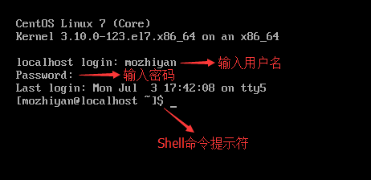

首页 > Shell > Shell基础（开胃菜）
进入Shell的两种方式
在 Linux 发展的早期，唯一能用的工具就是 Shell，Linux 用户都是在 Shell 中输入文本命令，并查看文本输出；如果有必要的话，Shell 也能显示一些基本的图形。
而如今 Linux 的环境已经完全不同，几乎所有的 Linux 发行版都使用某种图形桌面环境（例如 GNOME、KDE、Unity 等），这使得原生的 Shell 入口被隐藏了，进入 Shell 仿佛变得困难起来。
现代 Linux 系统在启动时会自动创建几个虚拟控制台（Virtual Console），其中一个供图形桌面程序使用，其他的保留原生控制台的样子。虚拟控制台其实就是 Linux 系统内存中运行的虚拟终端（Virtual Terminal）。
从图形界面模式进入控制台模式也很简单，往往按下
例如，CentOS 在启动时会创建 6 个虚拟控制台，按下快捷键
下图就是进入了控制台模式：
输入用户名和密码，登录成功后就可以进入 Shell 了。
以 CentOS 为例，可以在“应用程序”菜单中找到终端，如下图所示：

图：在“收藏”和“工具”分类中都可以找到终端
打开终端后，就可以输入 Shell 命令了：

CentOS 默认的图形界面程序是 GNOME，该终端模拟包也是 GNOME 自带的。
除了 GNOME 终端，Linux 还有其他的终端模拟包，例如：
而如今 Linux 的环境已经完全不同，几乎所有的 Linux 发行版都使用某种图形桌面环境（例如 GNOME、KDE、Unity 等），这使得原生的 Shell 入口被隐藏了，进入 Shell 仿佛变得困难起来。
进入 Linux 控制台
一种进入 Shell 的方法是让 Linux 系统退出图形界面模式，进入控制台模式，这样一来，显示器上只有一个简单的带着白色文字的“黑屏”，就像图形界面出现之前的样子。这种模式称为 Linux 控制台（Console）。现代 Linux 系统在启动时会自动创建几个虚拟控制台（Virtual Console），其中一个供图形桌面程序使用，其他的保留原生控制台的样子。虚拟控制台其实就是 Linux 系统内存中运行的虚拟终端（Virtual Terminal）。
从图形界面模式进入控制台模式也很简单，往往按下
Ctrl + Alt + Fn(n=1,2,3,4,5...)快捷键就能够来回切换。例如，CentOS 在启动时会创建 6 个虚拟控制台，按下快捷键
Ctrl + Alt + Fn(n=2,3,4,5,6)可以从图形界面模式切换到控制台模式，按下Ctrl + Alt + F1可以从控制台模式再切换回图形界面模式。也就是说，1 号控制台被图形桌面程序占用了。下图就是进入了控制台模式：

输入用户名和密码，登录成功后就可以进入 Shell 了。
$是命令提示符，我们可以在它后面输入 Shell 命令。
在图形界面模式下，输入密码时往往会显示为 *，密码有几个字符就显示几个 *；而在控制台模式下，输入密码什么都不会显示，好像按键无效一样，这一点请大家不要惊慌，只要输入的密码正确就能够登录。图形界面也是一个程序，会占用 CPU 时间和内存空间，当 Linux 作为服务器系统时，安装调试完毕后，应该让 Linux 运行在控制台模式下，以节省服务器资源。正是由于这个原因，很多服务器甚至不安装图形界面程序，管理员只能使用命令来完成各项操作。
使用终端
进入 Shell 的另外一种方法是使用 Linux 桌面环境中的终端模拟包（Terminal emulation package），也就是我们常说的终端（Terminal），这样在图形桌面中就可以使用 Shell。以 CentOS 为例，可以在“应用程序”菜单中找到终端，如下图所示：
图：在“收藏”和“工具”分类中都可以找到终端
打开终端后，就可以输入 Shell 命令了：
CentOS 默认的图形界面程序是 GNOME，该终端模拟包也是 GNOME 自带的。
除了 GNOME 终端，Linux 还有其他的终端模拟包，例如：
-
xterm 终端
最古老最基础的 X Windows 桌面程序自带的终端模拟包就是 xterm。xterm 在 X Windows 出现之前便已经存在了，默认包含在大多数 X Windows 中。xterm 虽然没有太多炫目的特性，但是运行它不需要太多的资源，所以 xterm 在针对老硬件设计的 Linux 发行版中仍然很常见，比如 fluxbox 图形桌面环境就用它作为默认的终端模拟包。 -
Konsole 终端
KDE 桌面项目也开发了自己的终端模拟包，名为 Konsole。Konsole 整合了基本的 xterm 特性以及一些更高级的类似 Windows 应用程序的特性。
关注公众号「站长严长生」，在手机上阅读所有教程，随时随地都能学习。内含一款搜索神器，免费下载全网书籍和视频。

微信扫码关注公众号